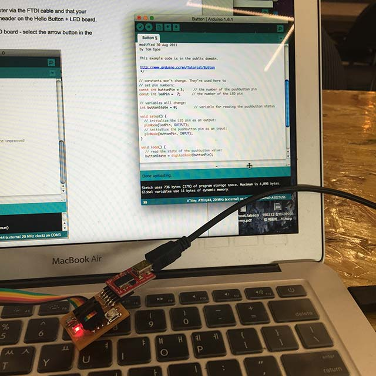
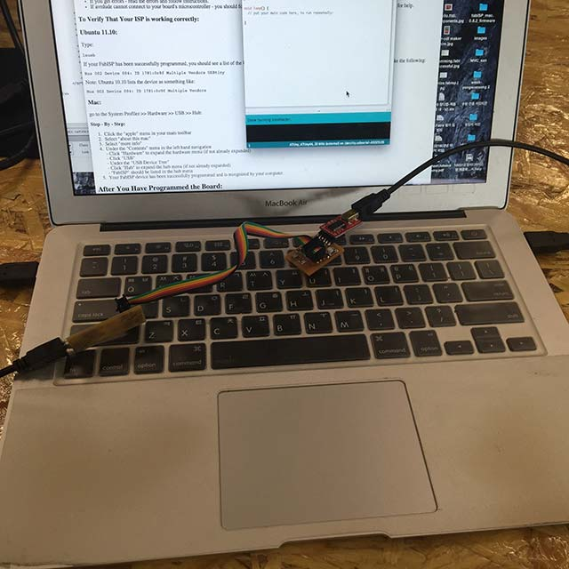

7. Embedded programming
Read a microcontroller data sheet
Program your board to do something, with as many different programming languagesand and programming environment as possible
Reading the ‘datasheet’
It was easy to find Attiny board 44 from data sheet and I’ve read it thoroughly to check which number of pins are connected to other boards and It came to me that finding ‘GND’ and ‘VCC’ is very important when looking at certain components.
pin-out arrangement for Attiny44
Learning from failure
As i forgot to look more closely at the fab modules i found some un-cut traces and i manually with the cutter cut the traces to prevent bridges.
There was a problem with my electronic design which i didn’t care for sure, which was there was a line which made a path directly from GND to VCC. Which could have a big mess to my board and set fire. When i connected the circuit with computer i could actually see the smoke and i knew that Macintosh automatically disable the circuit with overcurrent but Windows don’t !!! Learning from mistake again.
I’ve had a problem with programming the FabISP. FabISP is still giving me a lot of troubles and therefore i had to look again again and again.
I’ve checked again in my Mac OS to make sure the FabISP is successfully programmed and my computer recognizes as the USB( for Mac OS -> Go to ‘System preference’ -> Hardware)
If it is successfully programmed It normally catches the FabISP.
I’ve also checked with ubuntu and checked in terminal with command ‘lsusb’ to check if the FabISP is successfully connected.
I’ve done lots of trials to make ‘one’ successful FabISP. It was done my fifth trial and there were mistakes like using resistors that are not correct and other problems.
Programming with Arduino IDE
 |
 |
Blinking LED |
Connecting both boards |
By looking at the references sites ‘As220 Labs’ I could test my hello-board for testing the button when button is pressed, the led comes on to modify the board i’ve wanted to make it blink in faster speed by adding some code with delay(100); and switching the buttonState from ‘HIGH’ to ‘LOW’ constantly.
(video : )
Current status of ‘SYW board’
-
one FabKit v.0.2
-
two Hello.syw.board with components
-
three FabISP with only one working
Right now at the moment I’ve made 6 boards only 3 of them working and others for references and later-on reusable components. I’m always learning a lot from failures and I’ve been using lot of components and now I’m really trying to unsolder components to re-use it and save parts.